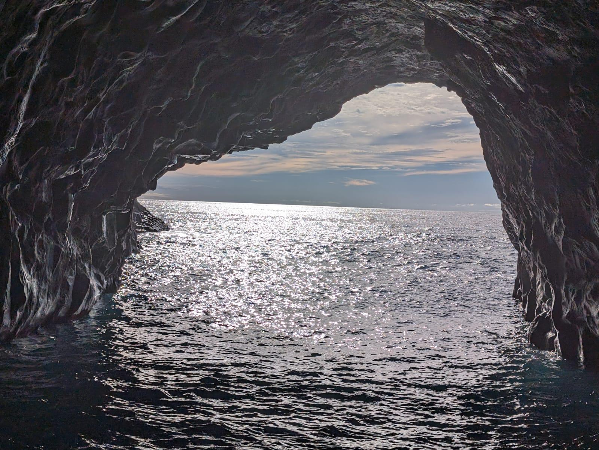
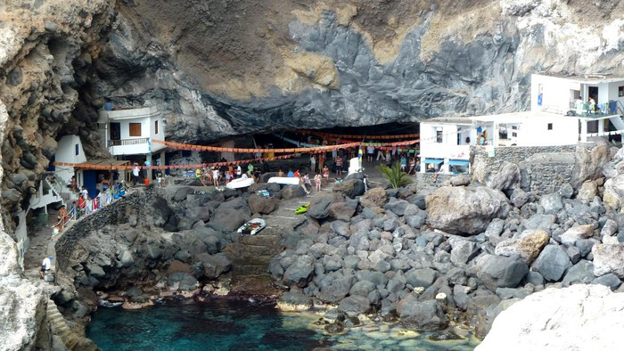
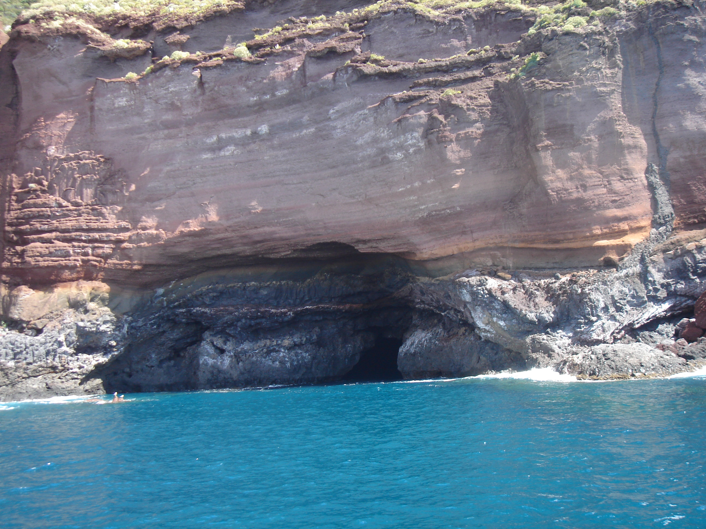

- Haz click en la imagen para mas informacion sobre ese punto.
- Haz click en el logo para volver al menu de inicio.
Esta pagina web esta hecha para usarse en movil o tablet.
Todavia no esta para ordenador.
Cueva Bonita:
Origen:
Dada a la naturaleza volcánica de La Palma se pueden observar abundantes tubos volcánicos causados por los ríos de lava de los numerosos volcanes, estos tubos con la erosión de la isla se descubrieron, entre estos, La cueva Bonita situada en Tijarafe.
Entradas:
Tiene dos entradas, de 16.8m y otra más pequeña de 9.76m, y tiene 84 metros de ancho, 105 de profundidad y 10 metros de altura s.n.m. permitiendo la entrada los días despejados. Curiosamente la entrada más grande tiene una forma parecida a la de La Palma tumbada, esto es una casualidad muy divertida.
Nombre:
Se llama la cueva bonita ya que en los meses de verano al ponerse el sol, los últimos rayos de luz entran por la boca pequeña iluminando el interior, el agua y las paredes de la cueva, con unos colores preciosos dignos del nombre.
Leyenda:
Al ser una cueva tan particular se le atribuye una leyenda muy conocida. Se dice que en la época de los piratas esta cueva salvaba a muchos pescadores ya que entraban por la boca grande de la cueva y salían por la pequeña despistando a los piratas que se quedaban esperando que salieran por donde entraron.
Playa:
Cuando la marea no está muy alta y no hay mala mar se puede distinguir una playa al final de la cueva. Frecuentada por locales en verano. También tiene una cueva submarina a la que solo es posible acceder buceando.
Importante: Auqnue esta excursion sea especifica para la busqueda de delfines, ballenas, animales marinos en general, y aunque tengamos la suerte de encontrarlos el 96% de las veces, no se puede asegurar el avistamiento ya que los animales estan en libertad y en un mar inmenso. cada dia es una nueva experiencia con nuevas oportunidades.
Links:
En nuestro instagram podras ver un monton de fotos de los animales y en La Guía de avistamiento de cetáceos de La Palma podrás descubrir mucho mas sobre estos increibles seres.
Poris de Candelaria:
Origen:
El poris de Candelaria coje su nombre debido a su uso de mini puerto en los origenes pesqueros de la isla, es donde los pescadores descansaban tras jornadas para vivir cerca del mar donde trabajaban todos los dias. Las cuevas que hoy en dia vemos con grandes fachadas blancas era donde se alojaban, es por ello que las cuevas que se habitan hoy en dia en el poris son solo de residentes de la isla, ayoritariamente gente de Tijarafe y han ido pasando de generación en generacion durante años.
Ubicación:
Se encuentra en la costa de Tijarafe, es posible llegar tanto por mar como por tierra. Para llegar por tierra se puede ir hasta tijarafe en coche por la carretera LP-1, una vez en Tijarafe veras una desviacion de la carretera que acaba en un aparcamiento y desde el aparcamiento hasta el publito solo hay unos 10min. Cabe tener en cuenta que la carretera es muy estrecha de dobre sentido y con unas curvas muy cerradas y no señalizadas, asi que hay que tener maxima precaución al conducir por esa carretera y usar el navegador para saber las curvas que vienen adelante.
Cueva:
El pueblo del porís se encuentra en el interior de una cueva, con una entrada de unos 50m de altura, esto hace las casas queden invisibles desde lo alto de la isla, siendo solo descuebiertas dese el mar o una vez en su interior. En su interior no se encuentra ningún chiringuito ni bar de ningun tipo, tampoco papeleras asi que en el caso de visitar este magnifico pueblito costero siempre hay que tener en cuenta llevar comida y una volsa para la basura generada.
Leyenda:
A esta preciosa cueva escondida también le corresponde una gran leyenda que le da su segundo nombre, cueva de los piratas, ya que devido a su situación invisible desde tierra se dice que los piratas dejaban sus tesoros y sus víberes en esas cuevas pudiendo al mismo tiempo esconderse de los residentes curiosos ya que no advertirian su presencia desde el pueblo superior.
Candelaria:
El apellido, Candelaria, se le da gracias a otra leyenda que cuenta cómo una tempesatad hizo para ahi a un buque portugués, en el que viajaba la virgen Candelaria, al para y bajar del barco la tempestad cesó y los marinos decidieron retomar el viaje, pero cada vez que la virgen se subía a este la tempestad comenzada de nuevo, de forma que decidieron dejarla ahi y partir sin la Candelaria. La virgen es ahora la patrona del pueblo de Tijarafe y se encuentra en este para poder visitarla facilmente.
Importante: Auqnue esta excursion sea especifica para la busqueda de delfines, ballenas, animales marinos en general, y aunque tengamos la suerte de encontrarlos el 96% de las veces, no se puede asegurar el avistamiento ya que los animales estan en libertad y en un mar inmenso. cada dia es una nueva experiencia con nuevas oportunidades.
Links:
En nuestro instagram podras ver un monton de fotos de los animales y en La Guía de avistamiento de cetáceos de La Palma podrás descubrir mucho mas sobre estos increibles seres.
Playa de la Veta:

Origen:
Esta espectacular playa, tan increible por sus propiedades estacionales, su gran localizacion y su bonita historia, fue un punto muy importante para el municipio, siendo uno de los principales puntos de desembarque de mercancias, donde intercambiaban pescado por otros bienes, ahora es un lugar de vacaciones para los locales que tienen una casa aqui ademas de para turistas que quieren conocer mas de la isla.
Ubicación:
Esta playa se ubica a los pies de un acantilado de 200m, en el municipio de Tijarafe al noroeste de la isla. Su ubicacion le permite disfrutar casi todos los dias de una increible puesta de sol y ademas tambien de una muy buena cantidad de luz solar, asi que una gran parte de la electricidad para la gente con casa es esta playa se consifgue a traves de placas solares.
Accesibilidad:
Se puede acceder por mar, con barco propio o contratando algun tour, y por tierra, en este caso
Se debera llegar hasta el barrio de Aguatavar en Tijarafe y de ahi tomar el desvio para llegar a el parquing de la playa que se
encuentra a unos 25min de la Playa a la que se debera bajar por un sendero de dificultad media.
Fiestas:
En Esta playa se celebran algunas fiestas de bercos como en la virgen del Carmen, patrona de los barcos, muchas embarcaciones recreativas salen y fondean en esta playa para poner musica, vailar, bañarse y nadar hasta la playa. Esto es por que a diferencia de candelaria y Puntagorda, La Veta tiene mucho mas sitio para fondear cerca de tierra y ser conveniente y facil la entrada a la playa desde el mar.
Arena:
La Veta es una playa estacional ya que renueva su arena anualmente. Durante todo el invierno, debido a cambios de dorrientes marinas la arena se va y dejando una playa de rocas, que aunque todavia preciosa no es tan comoda. En primavera empieza empieza a ver algo mas de arenta y al rededor de verano la playa alcanza su punto maximo de arenta haciendola un sitio perfecto y muy comodo para fondear cerca y pasar un agradable rato o tener un dia de relax en la arenosa playa.
Importante: Auqnue esta excursion sea especifica para la busqueda de delfines, ballenas, animales marinos en general, y aunque tengamos la suerte de encontrarlos el 96% de las veces, no se puede asegurar el avistamiento ya que los animales estan en libertad y en un mar inmenso. cada dia es una nueva experiencia con nuevas oportunidades.
Links:
En nuestro instagram podras ver un monton de fotos de los animales y en La Guía de avistamiento de cetáceos de La Palma podrás descubrir mucho mas sobre estos increibles seres.
Pozo Tinizara:

Barranco:
El pozo de Tinizara esta situado en la desembocadura del barranco de Guarome, que separa los municipios de Tijarafe y puntagorda quedandose la segunda por el norte. Cuenta con 38 casas de las cuales todas son cuevas sin mucha fachada si es que la tienen, a los lados del barranco.
Desvio:
El desvio para llegar hasta el pozo de Tinizara esta por la parte de tijarafe, cerca del área recreativa de Tinizara y cerca del Barranco de Garome. La carretera de bajada es larga y sinuosa y el asfalto llega hasta cierto punto. Si se tiene 4×4 se puede bajar hasta los aparcamientos y si no es mejor dejar el vehículo antes de la pista de tierra. Desde el aparcamiento hasta la zona de casitas hay una pequeña caminata de 20 min.
Importante: Auqnue esta excursion sea especifica para la busqueda de delfines, ballenas, animales marinos en general, y aunque tengamos la suerte de encontrarlos el 96% de las veces, no se puede asegurar el avistamiento ya que los animales estan en libertad y en un mar inmenso. cada dia es una nueva experiencia con nuevas oportunidades.
Links:
En nuestro instagram podras ver un monton de fotos de los animales y en La Guía de avistamiento de cetáceos de La Palma podrás descubrir mucho mas sobre estos increibles seres.
Cueva Colorada:
Caracteristicas:
texto
Curiosidades:
texto
Importante: Auqnue esta excursion sea especifica para la busqueda de delfines, ballenas, animales marinos en general, y aunque tengamos la suerte de encontrarlos el 96% de las veces, no se puede asegurar el avistamiento ya que los animales estan en libertad y en un mar inmenso. cada dia es una nueva experiencia con nuevas oportunidades.
Links:
En nuestro instagram podras ver un monton de fotos de los animales y en La Guía de avistamiento de cetáceos de La Palma podrás descubrir mucho mas sobre estos increibles seres.
Poris de Puntagorda:

Caracteristicas:
texto
Curiosidades:
texto
Importante: Auqnue esta excursion sea especifica para la busqueda de delfines, ballenas, animales marinos en general, y aunque tengamos la suerte de encontrarlos el 96% de las veces, no se puede asegurar el avistamiento ya que los animales estan en libertad y en un mar inmenso. cada dia es una nueva experiencia con nuevas oportunidades.
Links:
En nuestro instagram podras ver un monton de fotos de los animales y en La Guía de avistamiento de cetáceos de La Palma podrás descubrir mucho mas sobre estos increibles seres.
Volcan de Tajogaite:

Historia
En La Palma se pueden distinguir dos dominios volcánicos. El dominio de Taburiente, en el tercio norte, es el más antiguo y destaca la Caldera de Taburiente y el Valle de las Angustias (seguramente pasasteis por aquí de camino al puerto), se eleva hasta los 2426m que es el punto más alto de la isla en el Roque de los Muchachos, y se encuentra totalmente inactivo. El Dominio Dorsal corresponde a la mitad alargada hacia el sur, se distinguen dos sectores, sector norte o cumbre nueva de 7Km y el sector sur o cumbre vieja de 21.7Km. Es en el sector sur donde en los últimos 500 años se han producido 6 erupciones, siendo las dos más recientes (a excepción de el volcán de Tajogaite) la del volcán de Teneguía y el volcán de San Juan y uno de estos fue la razón por la que Tazacorte no quedó debajo de la lava, ya que sirvió de escudo y desviar la lava.
Formacion
Al producirse la erupción se crearon varias bocas, o puntos, de salida de lava (alrededor de 6) y una fisura en dirección NE. se formó el cono principal y varios secundarios, tres deltas lávicas y 48 hectáreas de nueva superficie entre las cuales hay 21 hectáreas de tubos lávicos submarinos y 14 nuevas playas.
Inicio
La erupción empezó el 19/9/2021, convirtiéndose así en el volcán más reciente de canarias, duró 58 días siendo el que estuvo más tiempo en erupción de los volcanes registrados en la isla.
Nombre
Se propusieron muchos nombres por encuesta popular (no vinculante) y 4283 personas votaron, el 35,65% votó por “Volcán de Tajogaite”,
siendo Tajogaite el nombre de la zona donde se encuentra el volcán, por delante del 22,1% que prefirió ‘volcán Tajogaite’ (sin el ‘de’),
y el 15,9% que se inclinó por ‘Cumbre Vieja’. Las otras dos opciones más respaldadas fueron ‘volcán Cabeza de Vaca’ (8%) y ‘volcán Cabeza Vaca’ (7,1%).
(esta info fue sacada de :
https://www.epe.es/es/canarias/20220705/tajogaite-consulta-ciudadana-volcan-palma-epi-14010727)
Tiene una altura máxima de 1120m sobre el nivel del mar y su cono es de 200m. destruyó 1200 hectáreas y 1700 construcciones teniendo así que desalojar a entre 7000 personas.
Importante: Auqnue esta excursion sea especifica para la busqueda de delfines, ballenas, animales marinos en general, y aunque tengamos la suerte de encontrarlos el 96% de las veces, no se puede asegurar el avistamiento ya que los animales estan en libertad y en un mar inmenso. cada dia es una nueva experiencia con nuevas oportunidades.
Links:
En nuestro instagram podras ver un monton de fotos de los animales y en La Guía de avistamiento de cetáceos de La Palma podrás descubrir mucho mas sobre estos increibles seres.